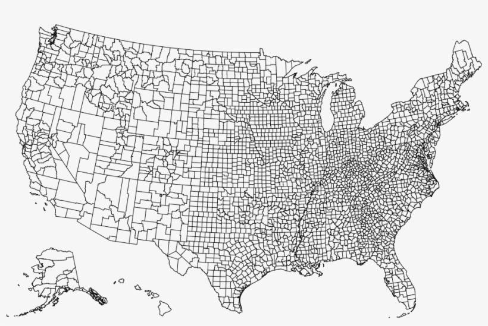

Home: Thomas Krienke's D3 Project
An Overview of the Project: A Process Walkthrough
I will preface the summary of this project by stating that I am amazed with what I have been capable of learning in these last few months. I entered D3 with no coding experience whatsoever, meaning I had to learn HTML, Javascript, and even basic programs such as Github and Visual Studio from the ground up. This has been a fun, thought-provoking, and occasionally aggravating adventure that I hope to perfect with time. My visualizations may not be the most exiting in terms of interactivity; however, the fact that I was able to create something visual with a mixture of text and symbols is mindblowing in it-self.
I found it very difficult to find a data set that interested me but was also manageable given my skills. I initially wanted to examine crime data in the United States and then compare that to county crime data in Indiana. I quickly found that many of the datasets surrounding that topic were outside of my range of ability so after playing with several documents in Excel and then D3 I decided to move on to another topic.
Through my search to find the perfect crime dataset, I came across some tables on Data.gov, documenting finances for public schools across the US. Realizing that this is a sizeable file with potential I went on a search to find additional data to support it. As many of the schools were separated by location based on zipcode or government FIPs number I found GeoJson files that would map both. Through trial and error, I was able to create a map of the US using the GeoJson files, but they would not load into the webpage until a minute or so after opening. I researched ways to fix this but eventually concluded that was too far out of my league and moved on to a simplified plan. The map looked similar to the one below, data waiting to be bound.

Continuing with the project, I found a dataset that had county spending levels calculated into state levels already, saving me some prep in Excel. I combined this data with a few other datasets to create a decent table of metrics. From there I first created the map that you will see below. By far this took the most time to create just due to how data is processed in Javascript and elements are read through the DOM. I chose to stick with blue for my graphs’ theme, with varying hues, just to keep things consistent and to reduce any confusion that could come with impediments such as colorblindness.
As for the other graphs here, I created them in the order that they are displayed. There was some back and forth editing once I learned a new skill, however the bulk of the work was completed at once. I had many data referencing issues with these, however I now have a better understanding of how Javascript works due these challenges. To conclude, I had difficulty pulling everything together for this project but I am proud of the final results.
Explanation of Study
Education is one of the most significant life experiences for members of modern society. From a young
age, citizens are taught important skills for their future professions, civic duties, relationships, and
other crucial life-skills. Here in the United States, this experience varies immensely depending on the
state. Each US state takes a different stance on education with some adopting strict standards or high
budgets while others spend significantly less or leave standards up to individual schools. This project
seeks to identify potential trends in employment, income, and overall satisfaction that may be partially
attributable to a state’s educational spending.
My initial data set, presented in the chart below, visualizes state educational spending per
student in 2019. The following webpages then contain data and findings on other state-level metrics. Sources
are in the webpage link at the end of the site’s task bar. On another note, the purpose of this project is
to present potential connections between educational spending and other metrics, not to form definitive
relationships.
State Education Spending per Pupil
Below is a map of the United States representing the educational spending per student for each state
in 2019. Average educational spending comes to $12,520 per student with a standard deviation of $3,488. The
top six spenders are situated on the East Coast with New York topping the chart with educational expenses of
$24,040 per pupil. On the other end of the spectrum, Utah keeps a tighter budget with expenses totaling
$7,628 per student. As is shown in the map, a large swath of the country, from Idaho and swooping into the
south spend roughly $10,000 or less on education.
It is worth noting here that the quality of education cannot be directly correlated to spending.
Budgetary inefficiencies can occur in the presence of skillful teachers and vice versa. Regardless, it will
be interesting to see how these metrics trend with the upcoming visuals.
Darker the blue, higher the educational spending per student in dollars. Chart is panable and zoomable.